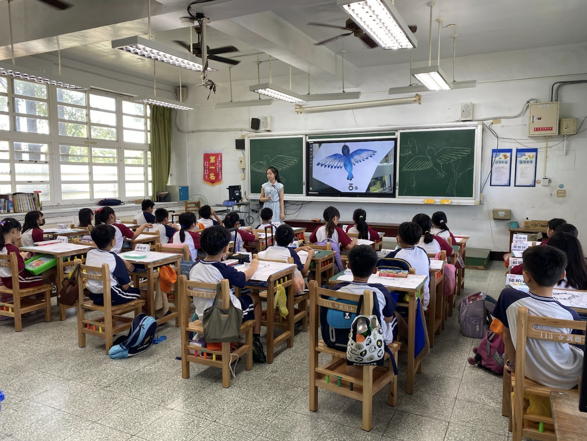

The art teacher is diligent in explaining all the characteristics and details of the bird. She guides the students in drawing the front and back of the bird. They listen carefully and after the teacher is finished, they begin composing their pictures on drawing paper.
美術老師認真地講解這隻鳥的所有特徵和細節。她引導學生們繪畫鳥的正面和背面。學生們仔細聆聽，老師講解完後，他們便開始在畫紙上構圖繪畫。
Teacher 程昱瑄 / Edwin Schadewald 製作